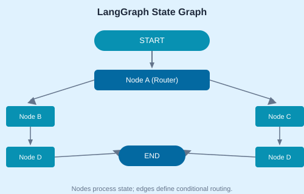

LangGraph models agent workflows as state machines. Nodes process state; edges define conditional transitions. This enables loops, branching, and complex orchestration.
pip install langgraph langchain-openai
from typing import TypedDict, List
from langgraph.graph import StateGraph, END
class AgentState(TypedDict):
messages: List[str]
next_agent: str
def router_node(state: AgentState):
# Classify and route
if "billing" in state["messages"][-1].lower():
return {"next_agent": "billing"}
return {"next_agent": "support"}
def billing_node(state: AgentState):
return {"messages": [f"Billing: Processing..."]}
graph = StateGraph(AgentState)
graph.add_node("router", router_node)
graph.add_node("billing", billing_node)
graph.add_conditional_edges("router", lambda s: s["next_agent"])
graph.set_entry_point("router")
app = graph.compile()Integrate Playwright agents as LangGraph nodes for web browsing, form filling, and data extraction.
Add evaluator nodes that critique outputs and trigger re-processing if quality is insufficient.
def evaluator_node(state: AgentState):
output = state["messages"][-1]
if len(output) < 50:
return {"needs_revision": True}
return {"needs_revision": False}